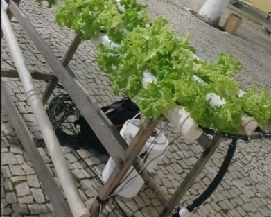
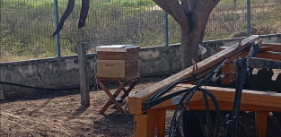
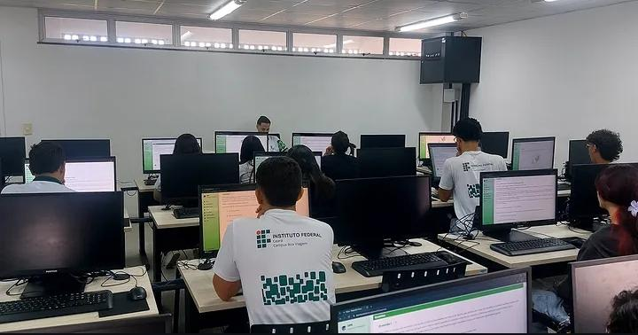
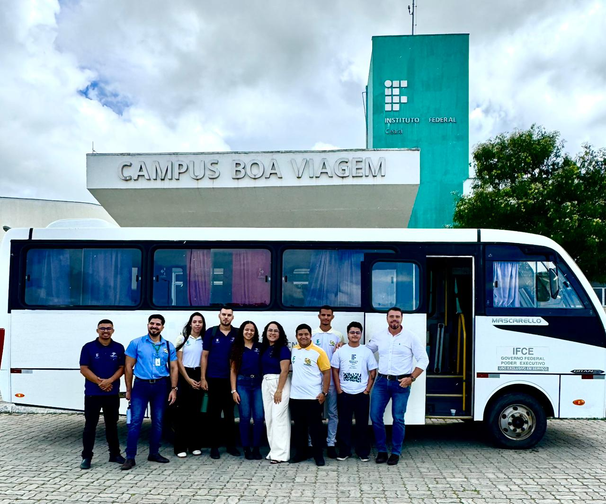
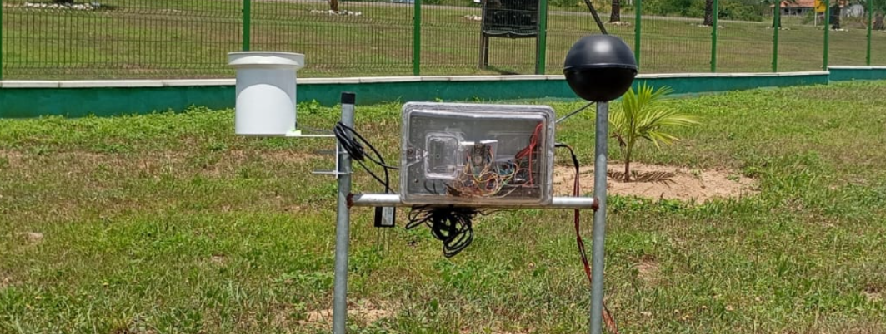

Nossos Projetos em Destaque
Explore as soluções inovadoras criadas pelos nossos alunos de ADS!

HidroWebnia
Solução hidropônica inovadora com monitoramento contínuo de nutrientes e pH via sensores.

BeeWeb
Uso de tecnologia IoT e plataforma web para auxiliar apicultores no manejo e monitoramento de colmeias.

DIPE
Sistema completo de Diagnóstico de Intervenção Pedagógica e Educacional para gestão inteligente.

Leite do Futuro
Tecnologia avançada e análise de dados para otimizar a gestão e a rastreabilidade da qualidade do leite.

Estação Meteorológica
Estação de baixo custo para monitoramento climático em tempo real. Ideal para pesquisas e agricultura, cobrindo desde o esquemático até a montagem final.

Em breve
Novas ideias e tecnologias estão sendo moldadas para compor nossa vitrine acadêmica.
É aluno e o seu projeto não está aqui?
Seu projeto pode inspirar outros desenvolvedores. Publique sua criação, contribua com a comunidade do IFCE e dê visibilidade real ao seu trabalho!